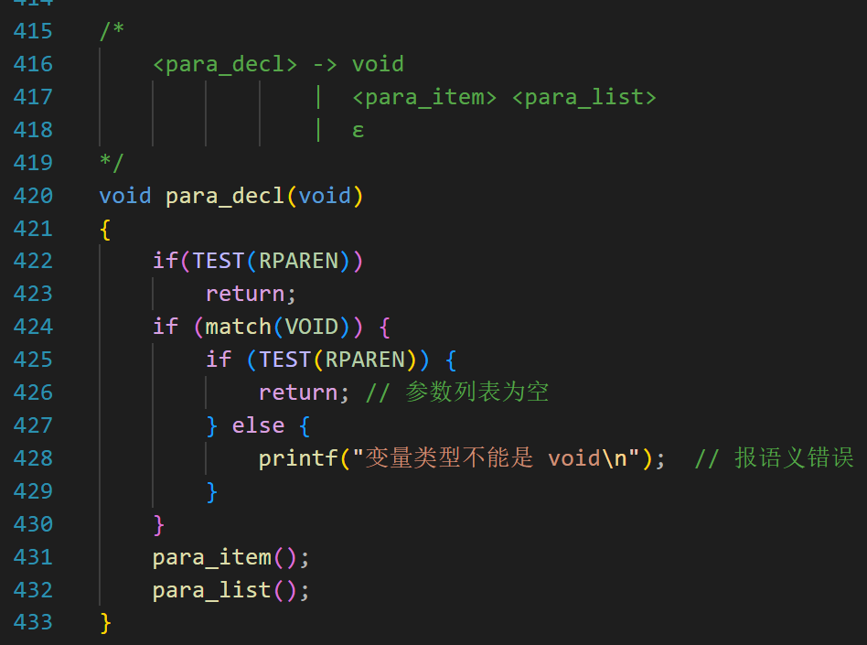
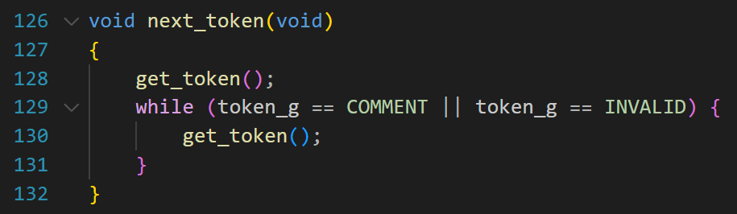
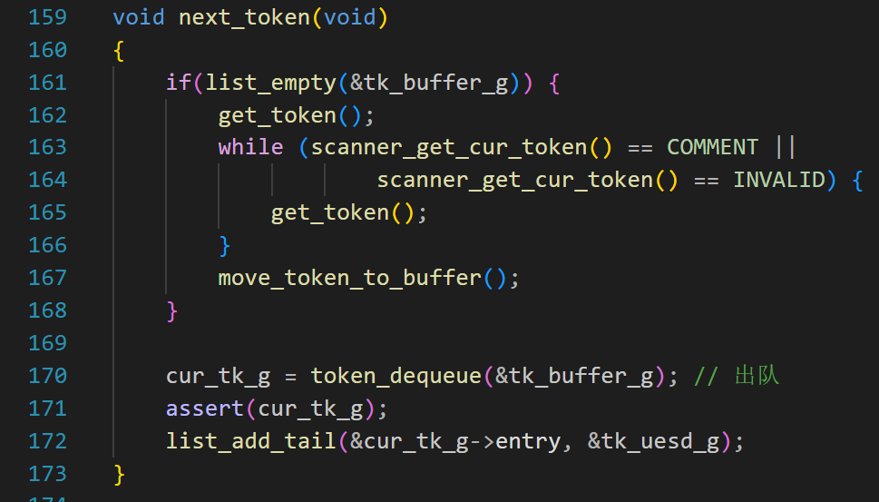
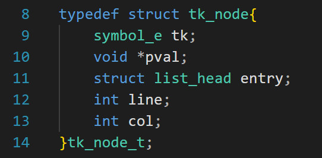
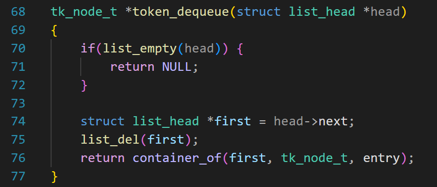
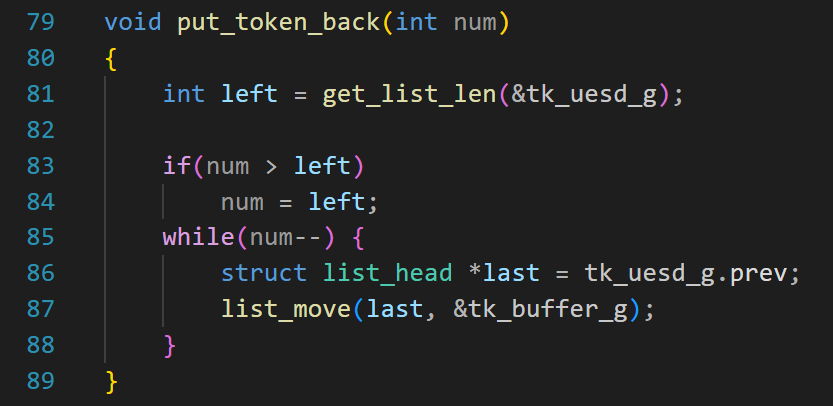
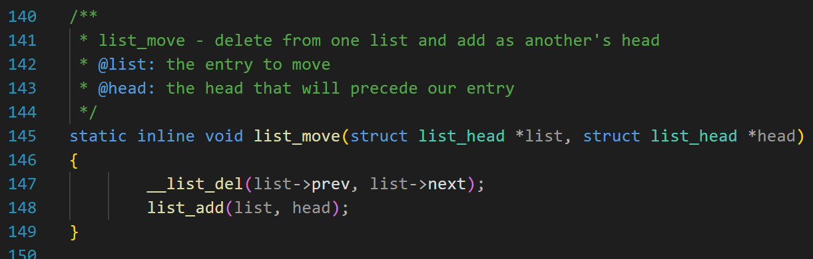
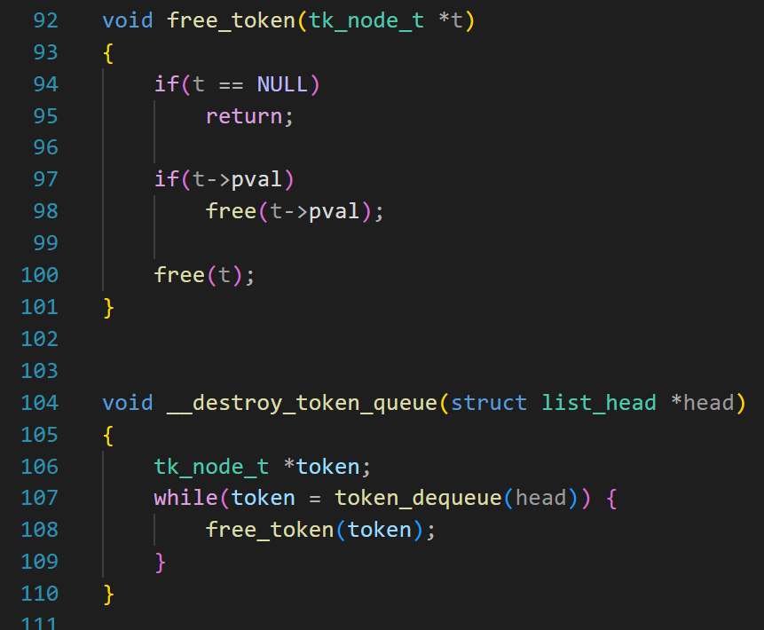

第8天：来点后悔药
来点后悔药
背景
在语法分析的时候的，我写了一个函数

这个函数的作用是解析函数的参数，例如
1 | |
当匹配到“(” 的时候，就会调用这个函数。
但是我现在看这个代码，有点别扭。哪里不对劲呢？
如果遇到的代码是
1 | |
错误处理对应上面的第 428 行；
如果遇到的代码是
1 | |
错误处理就留给 para_item 函数了。
都是同一个类型的错误，怎么处理的代码还不一样？所以别扭。
还有，如果后面要支持 void *p 这种参数，428 这行也是有问题的。
为了把 int foo(void a, int b) 中第 1 个参数放到 para_item 函数中处理，我有一个想法：当 425 行不成立的时候，把 void 和另外一个 token 放回去。
解决思路

回顾一下，每一次调用 next_token() 都会更新全局变量 token_g，我们直接读取 token_g 就会得到一个新的符号。
现在，next_token 改成这样：

先定义 2 个空的链表（都是全局变量）
1 | |
第 1 行，tk_buffer_g 这个链表，是一个缓冲区，退回的 token 都放在里面。
第 2 行， tk_uesd_g 的这个链表，专门用来存放使用过的 token。
现在我们看上面的代码：
第 161 行，当 tk_buffer_g 链表为空的时候，说明没有退回的 token，那就执行 162~166 来更新 token_g 。这和之前的逻辑是一样的。
scanner_get_cur_token 函数很简单，代码如下。
1 | |
第 167 行，move_token_to_buffer() 的作用是把 token_g 加入 tk_buffer_g 链表（尾插），这样 tk_buffer_g 链表就只有一个用户节点。
第 170 行，token_dequeue() 的作用是从 tk_buffer_g 链表中删除第一个节点（其实就是刚才加入的 token_g ），并且返回指向这个节点的指针。
cur_tk_g 是一个指针，而且是全局变量，它会指向这个被删除的节点，表示当前要解析的 token；
注意，以前代码中用 token_g 的地方，都需要改成用 cur_tk_g ；
第 172 行，把 cur_tk_g 指向的节点加到 tk_uesd_g 链表的末尾。说不定什么时候后悔了，我们就从这个链表末尾把符号移动到缓冲区的开头。
下面看看后悔的情况。
假如我要放回当前的 token，怎么做呢？
首先从 tk_uesd_g 链表找到最后一个节点（尾部的） ，删除它，并把它插入到 tk_buffer_g 链表的头部。
这时候再调用 next_token 函数，因为缓冲区不是空，所以执行第 170 行，从 tk_buffer_g 链表中删除第一个节点，并且返回指向这个节点的指针。
这样，这个 token 就回来了！
如果我连续 10 个 token 都后悔了呢？
例如先读取了 A1， 又读取了 A2，… , 最后读取了 A10；
做法如下：
从 tk_uesd_g 链表找到最后一个节点（尾部的） A10，删除它，然后把它插入到 tk_buffer_g 链表的头部。
从 tk_uesd_g 链表找到最后一个节点 A9，删除它，然后把它插入到 tk_buffer_g 链表的头部。
…
从 tk_uesd_g 链表找到最后一个节点 A1，删除它，然后把它插入到 tk_buffer_g 链表的头部。
这时候，tk_buffer_g 的链表中从头到尾有 A1，A2，…，A10
反复调用 next_token 函数， 就可以重新读取 A1，A2，…，A10 了！
代码讲解
move_token_to_buffer

这个结构体用来保存 token 的信息。
第 9 行，就是以前 token_g 的值。
第 10 行，当 token_g 的值是 ID、STRING、NUM、CHARA 的时候， pval 指针不为空，它会指向一个内存，里面存储标识符、字符串、数字、字符。
第 11 行，链表节点。相信读者已经熟悉了这个结构体。
第 12 ~13，保存 token 的行号和列号，方便出错的时候打印位置。
1 | |
3~7 行分配内存，并检查内存是否有效。
如果 token 的类型是标识符，则第 13 行成立，为标识符分配内存，并拷贝 token_id_g 到 new->pval 中。
如果 token 的类型是整形常量，则第 24 行成立，为整数分配内存并存储 token_num_g 到*(int *)new->pval。
第 36 行，把节点加入到 tk_buffer_g 链表的尾部。
其他代码很简单，就不解释了。
token_dequeue

如果把链表看成队列，且链表的头对应队列的头，这个函数的作用是从队列的头部出队。
第 74 行，得到第一个节点。
第 75 行，删除之。
第 76 行，返回被删除节点的地址。
put_token_back

这个就是后悔药的代码。
第 81 行，先求 tk_uesd_g 链表里面有多少个节点。如果只有 10 个节点，你想回退 11 个节点是不可能的。
第 86 行，得到 tk_uesd_g 链表中最后那个节点；
第 87 行，list_move 是文件 list.h 中的一个函数。源码如下：

这个函数有 2 个参数，作用是把某个节点移动到另一个链表的头部，所谓移动，就是先删除，再插入。
参数 1：要删除的那个节点的链表节点；
参数 2：另外一个链表的头节点；
所以，第 87 行的意思是把 tk_uesd_g 链表中最后那个节点删除，再把它插入到 tk_buffer_g 链表的头部；
其他的代码比较简单，不再赘述。
这篇文章到这里就结束了。
另外，代码中一定有很多 malloc、calloc 等分配内存的代码，别忘了写释放内存的代码。
例如：

本节的代码和后面要讲的符号表合并在一起了。等符号表讲完了，读者可以下载代码实践。